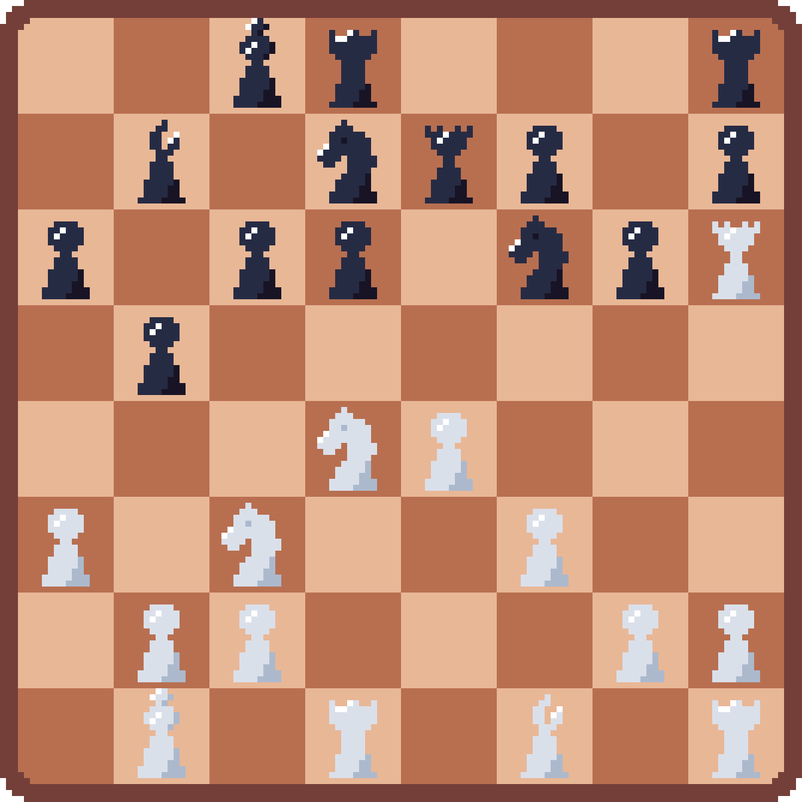

Chess-AI

Chess Explained
Chess is a turn-based strategy game played between two players on an 8×8 board with alternating light and dark squares. One player controls the white pieces and moves first, while the other controls the black pieces. The objective is to checkmate the opponent’s king, meaning the king is under attack and cannot escape capture.
Setup Phase
Each player begins with 16 pieces arranged on their first two ranks:
- Back rank: Rook, Knight, Bishop, Queen, King, Bishop, Knight, Rook
- Front rank: Eight pawns
The white pieces occupy ranks 1 and 2, while black pieces occupy ranks 7 and 8. The queen starts on her own color (white queen on light square, black queen on dark square).
Movement Phase
Players alternate turns, with white always moving first. Each piece has distinct movement patterns:
- Pawn: Moves forward one square, or two squares on its first move. Captures diagonally forward.
- Rook: Moves horizontally or vertically any number of squares.
- Bishop: Moves diagonally any number of squares.
- Queen: Combines rook and bishop movement.
- Knight: Moves in an L-shape (two squares in one direction, one square perpendicular).
- King: Moves one square in any direction.
Special moves include castling (king and rook repositioning), en passant (special pawn capture), and pawn promotion (pawn reaching the opposite end transforms into any piece except king).
Check and Checkmate
When a king is under attack, it is in check and must immediately escape by moving, blocking the attack, or capturing the attacking piece. If no legal move can resolve the check, it becomes checkmate and the game ends.
End Phase
The game can end in several ways:
- Checkmate: One player’s king cannot escape capture
- Stalemate: A player has no legal moves but is not in check (results in a draw)
- Draw: By agreement, insufficient material, threefold repetition, or the 50-move rule
Win Conditions
A player wins by achieving checkmate against the opponent’s king. Unlike other board games where pieces are gradually eliminated, chess focuses on targeting the single most important piece while all others remain active throughout most of the game.
Extra: Chess includes tactical concepts like pins, forks, skewers, and discovered attacks, where pieces work together to create threats. The game emphasizes both tactical calculation and strategic planning across opening, middlegame, and endgame phases.
Description
You can play against someone else locally, against my AI in 3-difficulties and even watch how two AI’s play against each another. Good luck!
Minimax
The algorithm simply tries to maximize the score for itself and minimize it for the opponent. By introducing depth, the algorithm can try a couple of moves and only then evaluate the out coming score, to come to a better result. This agent is considered as the hardest difficulty so far and reaches a depth of 5, i.e. it looks 5 steps in the future.
Monte Carlo
This algorithm is similar to the minimax, but it tries to reach a higher depth by exploiting good paths more and barely testing the other explored paths that have showed bad results. So in theory it could be better by having a much better lookahead compared to the depth of 5, but in practise its choices are too random. Therefore the agent is considered medium difficulty.
Neural Networks
Pretrained neural networks have the highest potential out of all the other algorithms as they don’t evaluate their choice on runtime, instead this already happened in the training process. It is super difficult to train a neural network from scratch as you need to guess a good internal structure and train effectively against real players. If you use an evolutionary approach, as it is currently implemented, the networks will evaluate themselves and make many unexplainable choices. This is similar to the example in which you would try to get better at chess by playing by yourself without knowing the chess rules. Yes, you will eventually figure it out and understand the objective, but you do so by mapping it to similar experiences, e.g. tic-tac-toe teaches you that only one can win, never both. The neural network will never figure out what winning means without any good guidelines. So you either make the guidelines very clear, or you find a better appraoch.
Datastructure
The most annoying thing about chess are all those extra rules: casteling, en pasant, pawn upgrade, check, checkmate, remis. The implementation tried to be efficient at storing the board and its pieces, but the complexity makes it impossible to reduce the full game into easy operations. You need to track the many different pieces, with the many rules, while checking for a checkmate after every more. Mühle was by far easier and there the implementation reached near perfect datastructures with almost no room for improvement.
Download
Use the browser version for simplicity. If you want to benchmark and tweak the agents, run it locally with cargo.
© Made by Purpurax